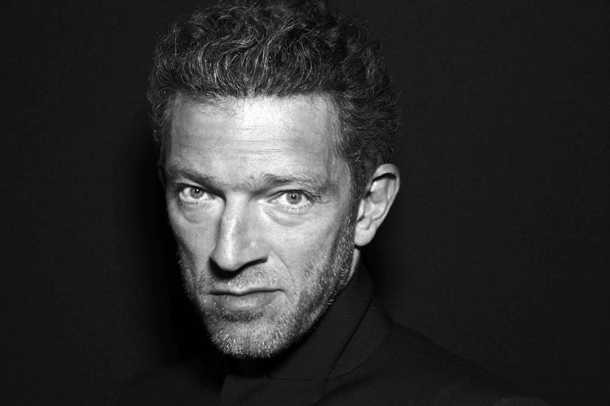
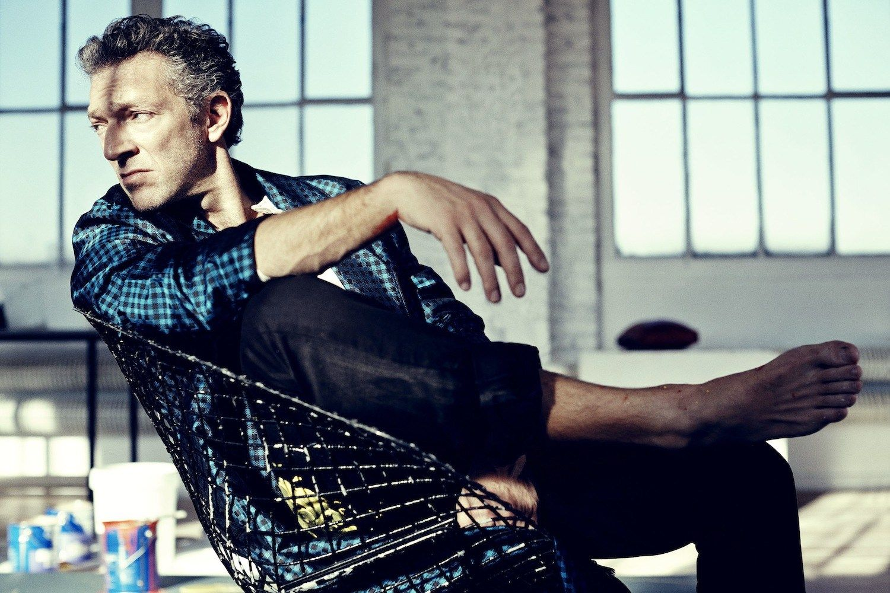
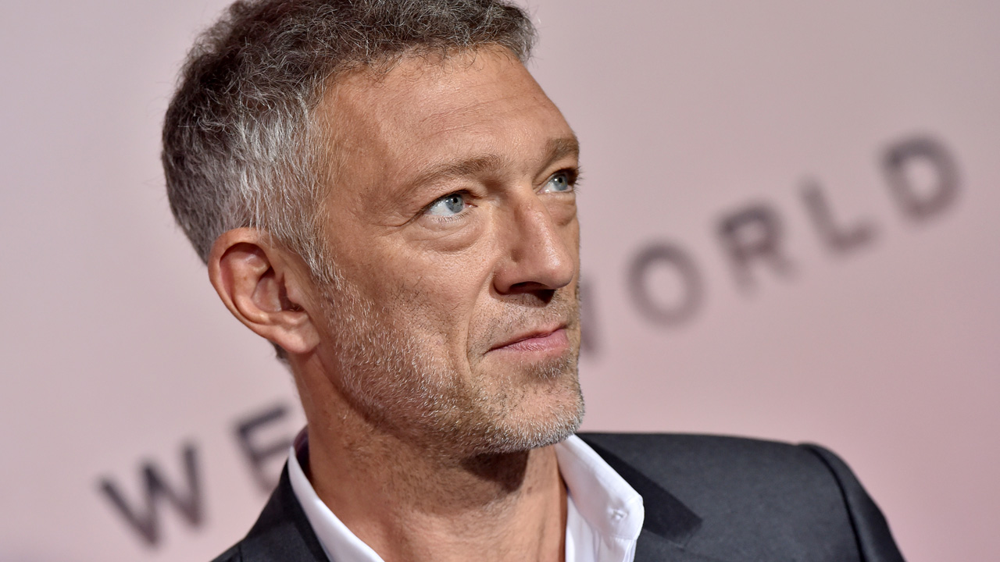
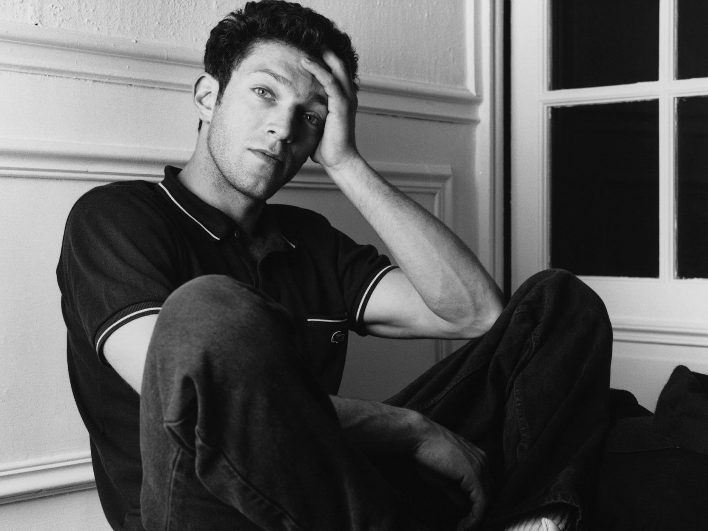

Год производства: 2014
Страна: Франция, Германия, Испания
Жанр: фэнтези, триллер, драма, мелодрама, семейный
Слоган: «The legend is reborn...»
Режиссер: Кристоф Ган
В главных ролях: Леа Сейду, Венсан Кассель, Андре Дюссолье, Эдуардо Норьега
Год производства: 2015
Страна: Франция
Жанр: драма, мелодрама
Режиссер: Майвенн
В главных ролях: Эмманюэль Берко, Венсан Кассель

Год производства: 2010
Страна: США
Жанр: драма, триллер
Слоган: «I just want to be perfect»
Режиссер: Даррен Аронофски
В главных ролях: Натали Портман, Венсан Кассель, Мила Кунис